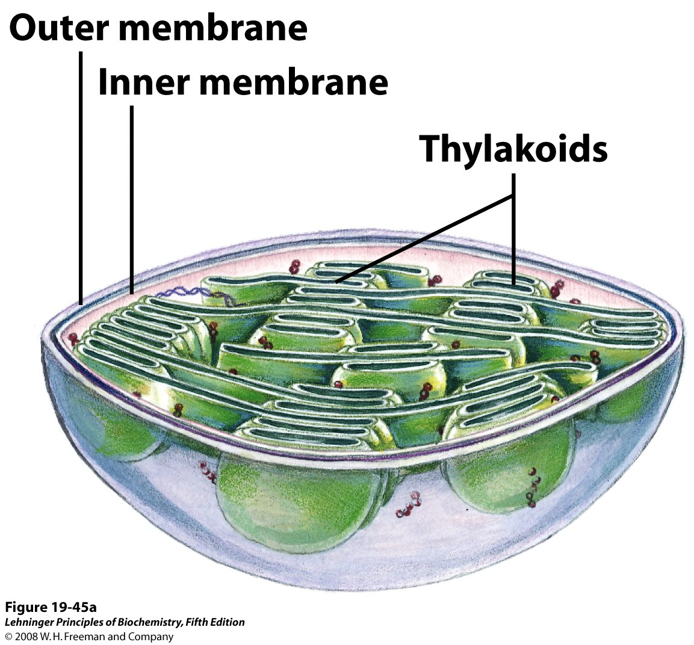
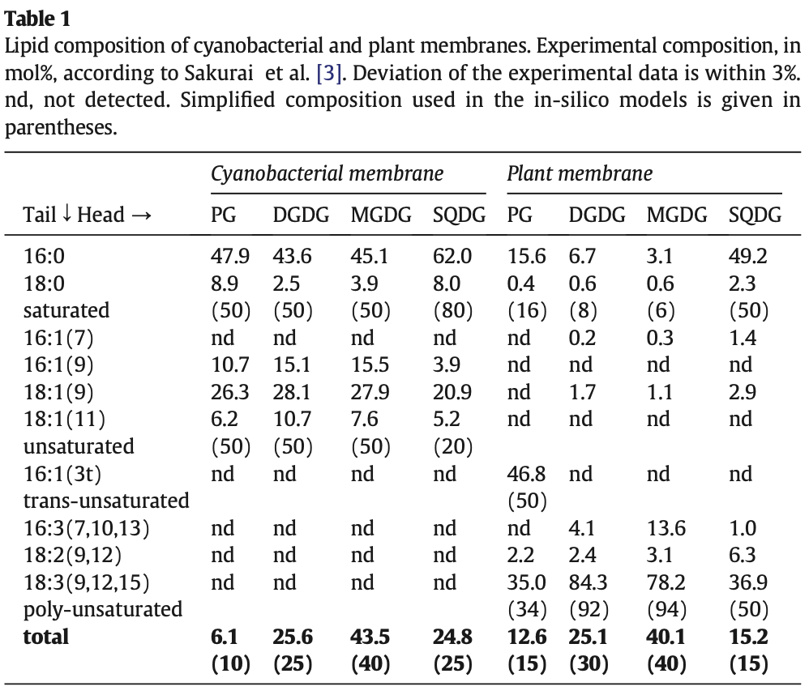

Obtenção de modelos de membranas biológicas para simulações In silico.
O estudo e a caracterização da membrana de uma célula é de extrema importância para o entendimento de sua função. Adicionalmente, a composição da membrana é absolutamente necessária para a compreensão da estrutura e da função de proteínas integrais da membrana, como canais e transportadores. Este trabalho pode ser facilitado por meio de simulações computacionais da interação destas proteínas. No entanto, para isto modelos In silico de membranas biológicas precisam ser construídos. Baseado nas informações acima, iremos fazer o roteiro abaixo.
Diferenciando proteínas integrais e proteínas periféricas da membrana.
- Usando o Chimera, abra o arquivo pdb de código 3RKO e responda:
- Busque em banco de dados, caracterizando e descrevendo a função desta proteína.
- Esta é uma proteína integral ou periférica?
- Identifique visualmente as regiões estruturais e os resíduos de aminoácidos que estão em contato com a bicamada lipídica.
Construindo uma membrana básica de procariontes.
- Abra a home page do CHARMM.
- No menu esquerdo, vá em
Input Generator. - Na nova página, no menu esquerdo, vá em Membrane Builder > Bilayer Builder.
- Mais embaixo, selecione e clique em
Membrane Only System. - Siga com os parâmetros pré-selecionados e na caixa
Length of X and Y, coloque um número entre 50 a 100. - Mais abaixo, vá na opção
Bacterial Lipidse preencha com as seguintes proporções:- Lipídeos com caudas 16:0: 34%.
- Lipídeos com caudas 16:1: 30%.
- Lipídeos com caudas 18:1: 36%.
- Selecione proporções diferentes entre as duas camadas únicas.
- Clique em
Show System Infoe verifique se há avisos. Se não existirem, passe para o próximo passo. Se existirem, mude a proporção ou tipo dos lipídeos selecionados. - Clique no canto inferior direito em
Select Model/Chain. - Na nova página, baixe o arquivo pdb criado e visualize-o com o Chimera.
- Ainda na nova página, na parte
Component Building Options, inclua íons e coloque 0.30 M de concentração de cloreto de potássio (KCl). Clique emCalculate number of ionse verifique se o número de íons positivos e negativos estão com valores > 0. - Clique no canto inferior direito em
Build components. - Na nova página, baixe o arquivo pdb criado e visualize-o com o Chimera. Verifique a membrana e cada um dos seus constituintes, com as opções de menu do Chimera.
Criando uma membrana para a proteína 3RKO
- Repita os 3 primeiros passos do item acima.
- Mais embaixo, selecione e clique em
Protein/Membrane System. Coloque na caixa o código do pdb 3RKO e emDownload Source, selecione OPM (Orientations of Proteins in Membranes database). - Clique no canto inferior direito em
Select Model/Chain. - Na nova página deixe tudo padrão e siga para o próximo passo
Manipulate PDB(Canto inferior direito). - Clique no canto inferior direito em
Generate PDB and Orient Molecule. - Na nova página, nas opções de orientação, clique em
Use PDB Orientation. Para fins de simplificação, não marque as outras opções. Siga para o próximo passoCalculate Cross-Sectional Area(Canto inferior direito). - Siga a partir dos passos 5 e 6 (do item anterior), usando o
Length of X and Yde 250. Clique emDetermine the System Size(Canto inferior direito).
Aviso: Esta etapa demora alguns minutos.
- Na nova página, na parte
Component Building Options, coloque uma concentração de cloreto de potássio (KCl) suficiente para manter o número de íons positivos e negativos em valores > 0. Clique emCalculate number of ions. - Clique no canto inferior direito em
Build components.
Aviso: Esta etapa demora alguns minutos.
- Na nova página, baixe o arquivo pdb criado e visualize-o com o Chimera.
- Verifique a membrana e cada um dos seus constituintes, com as opções de menu do Chimera.
Construindo uma membrana para a tAPX de Spinacia oleracea
Nos tutoriais anteriores fizemos o modelo das duas isoformas do cloroplasto da enzima APX de Spinacia oleracea: a sAPX, que era a isoforma presente no estroma do cloroplasto; e a tAPX, que era a isoforma ligada a membrana do tilacóide. Esta última possui uma região C-terminal estendida, responsável pela âncoragem desta proteína na membrana do tilacóide.
Iremos agora, produzir uma membrana para incluir no modelo da tAPX obtido nas aulas anteriores, utilizando a interface web do CHARMM-GUI. No entanto, precisamos ter ideia da composicão de lipídeos da membrana do tilacóide, estruturas internas do cloroplasto (vide figura abaixo)

A membrana do tilacóide possui uma composição especial de lipídeos, quando comparada a membrana plasmática da célula vegetal. Os galactolipídeos estão entre as principais tipos de lipídeos polares constituintes dessa membrana, altamente especializada, devido aos seguintes fatores:
- Nela estão vários pigmentos fotossintetizantes, tanto aqueles com função de antenas, como os que estão ligados aos Fotossistemas e aos LHCs (Light Harvesting Complexes). É nesta membrana que ocorre a fase fotoquímica da fotossíntese em Viridiplantae. É nessta fase que há transformação da energia luminosa em energia química, quebra da molécula de água e consequente liberação do O2. A energia luminosa é então conservada na forma de um gradiente de H+ que promove uma força motriz de prótons para a produção de ATP (que será posteriormente utilizado na fase bioquímica).
- Durante a presença de luz, ao longo desta membrana há uma enorme diferença de gradiente eletroquímico, portanto, ela deve ter uma estrutura resistente para tal fim (da mesma forma que a membrana interna da mitocôndria).
Iremos tirar a composição geral de lipídeos dessa membrana do artigo publicado por Eerden et al., 2015, o qual apresenta a seguinte tabela:

Outras ferramentas
- LipidWrapper. Artigo original. Git.
- Memoir. Artigo.
- LipidBuilder - Plugin do programa VMD.